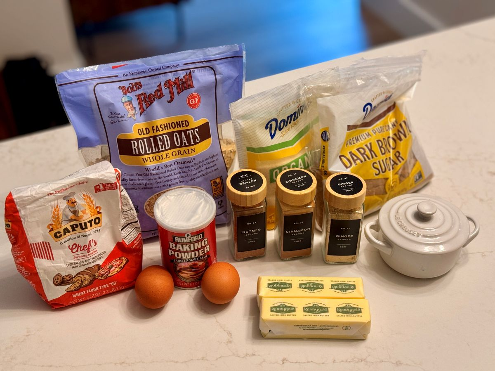
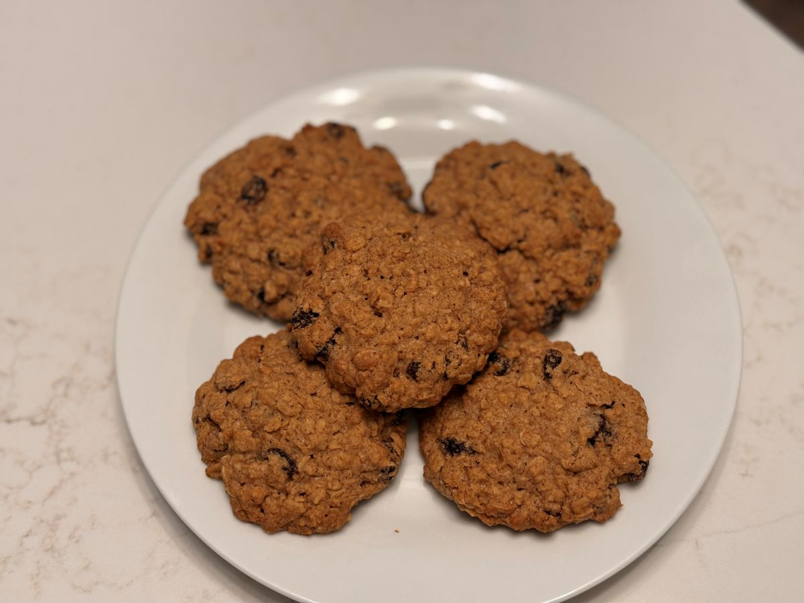

Heavy on autumn aromatics with a wonderfully chewy center, these cookies bring together premium old-fashioned oats, plumped raisins, and a generous hand of cinnamon, ginger, and nutmeg.

Overview
Every kitchen behaves differently—use your own judgment with ingredients, spice levels, and baking times.
Inspired by Rick’s craving for a cozy spice-and-oatmeal mash-up and adapted from a classic Brown Eyed Baker oatmeal-raisin recipe, this version swaps in Caputo 00 flour for a tender crumb, incorporates microwave-plumped raisins, and leans heavily into comforting autumn spices. A brief refrigerator rest and gentle pressing before baking ensure they hold their perfectly chewy, satisfying shape.
Ingredients
Raisins & Prep
- 1 ½ cups raisins (placed in a large measuring cup, covered with water, microwaved for 1 minute to plump, then patted completely dry)
Dry Ingredients
- 2 cups Caputo 00 flour (red bag)
- 1 tsp baking soda
- 1 tsp salt
- The Fall Spice Blend: 5 Tbsp ground cinnamon, 1 Tbsp ground ginger, and 1 Tbsp ground nutmeg (adjust to personal taste)
- 3 cups Bob's Red Mill old-fashioned oats
Wet Ingredients & Sugars
- 1 cup unsalted Kerrygold butter, softened to room temperature
- 1 cup packed light brown sugar
- ½ cup granulated sugar
- 2 large eggs (at room temperature)
- 2 tsp pure vanilla extract
Method
1. Plump the Raisins
- Place your raisins in a large measuring cup and cover them with water.
- Microwave for 1 minute to accelerate the plumping process.
- Drain thoroughly and pat completely dry with paper towels before adding to the dough.
2. Mix the Dry Ingredients
- In a medium bowl, whisk together the Caputo 00 flour, baking soda, salt, cinnamon, ginger, and nutmeg.
- Stir in the Bob's Red Mill old-fashioned oats and set aside.
3. Cream Butter and Sugars
- Using your KitchenAid stand mixer fitted with the paddle attachment, beat the softened Kerrygold butter, brown sugar, and granulated sugar together on medium speed until smooth and creamy (about 2 minutes).
4. Add Wet Ingredients
- Add the eggs one at a time, mixing well after each addition.
- Stir in the vanilla extract. Scrape down the sides of the bowl as needed.
5. Combine and Chill
- Slowly add the dry ingredients to the wet ingredients on low speed just until combined.
- Gently fold in your patted-dry, plumped raisins.
- Cover the dough and let it rest in the refrigerator for 1 hour, then allow it to come back up slightly toward room temperature for easier handling.
6. Shape the Cookies
- Preheat your oven to your preferred baking temperature and line your baking sheets with parchment paper.
- Scoop the dough using a full scoop from a large scooper (or a small melon-baller if you prefer smaller cookies; final count will depend on your scoop size).
- Place dough balls onto the baking sheet and flatten them ever so slightly before baking.
7. Bake
- Bake until the edges are golden and set. Because these are larger cookies, they take about 28 minutes to bake through while staying wonderfully chewy in the center.
- Cool on the baking sheet for a few minutes before transferring to a wire rack.
8. Enjoy
Savor the deep autumn spice notes with a hot cup of coffee or tea!
